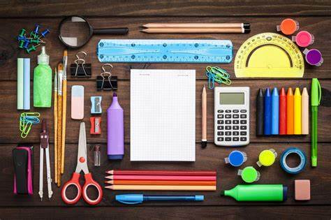

<app-home-toolbar></app-home-toolbar>

<!-- Menú lateral exclusivo para categorías en pantallas pequeñas -->
<ion-menu side="start" contentId="home-content" menuId="category-menu">
  <ion-content class="ion-padding">
    <ion-list>
      <ion-item button>
        <ion-label>Papelería</ion-label>
      </ion-item>
      <ion-item button>
        <ion-label>Electrónica</ion-label>
      </ion-item>
      <ion-item button>
        <ion-label>Otros</ion-label>
      </ion-item>
    </ion-list>
  </ion-content>
</ion-menu>
<!-- Contenedor de categorías (pantallas grandes y medianas) -->
<ion-content id="home-content">
  <ion-toolbar class="custom-toolbar">
    <!-- Categorías a la izquierda -->
    <div slot="start" class="categories-container">
      <ion-button class="category-btn" (click)="toggleCategories()">
        <ion-icon name="reorder-three-outline"></ion-icon>
        <span>Categorías</span>
      </ion-button>

      <!-- Botones secundarios (solo en pantallas grandes y medianas) -->
      <div class="subcategories">
        <ion-button class="subcategory-btn" [class.show]="showSubcategories">Papelería</ion-button>
        <ion-button class="subcategory-btn" [class.show]="showSubcategories">Electrónica</ion-button>
        <ion-button class="subcategory-btn" [class.show]="showSubcategories">Otros</ion-button>
      </div>
    </div>

    <!-- Botón Donar a la derecha -->
    <ion-buttons slot="end">
      <ion-button class="donate-btn" (click)="goToPublish()">
        <ion-icon name="heart"></ion-icon>
        Donar
      </ion-button>
    </ion-buttons>
  </ion-toolbar>

  <ion-grid>
    <ion-row>
      <ion-col size="6" size-md="4" size-lg="4">
        <ion-card class="custom-card">
          <!-- Sección del usuario -->
          <div class="user-info">
            
            <span class="user-name">Usuario</span>
          </div>
          <!-- Imagen principal -->
          
        </ion-card>

      </ion-col>
    </ion-row>
  </ion-grid>
</ion-content>
